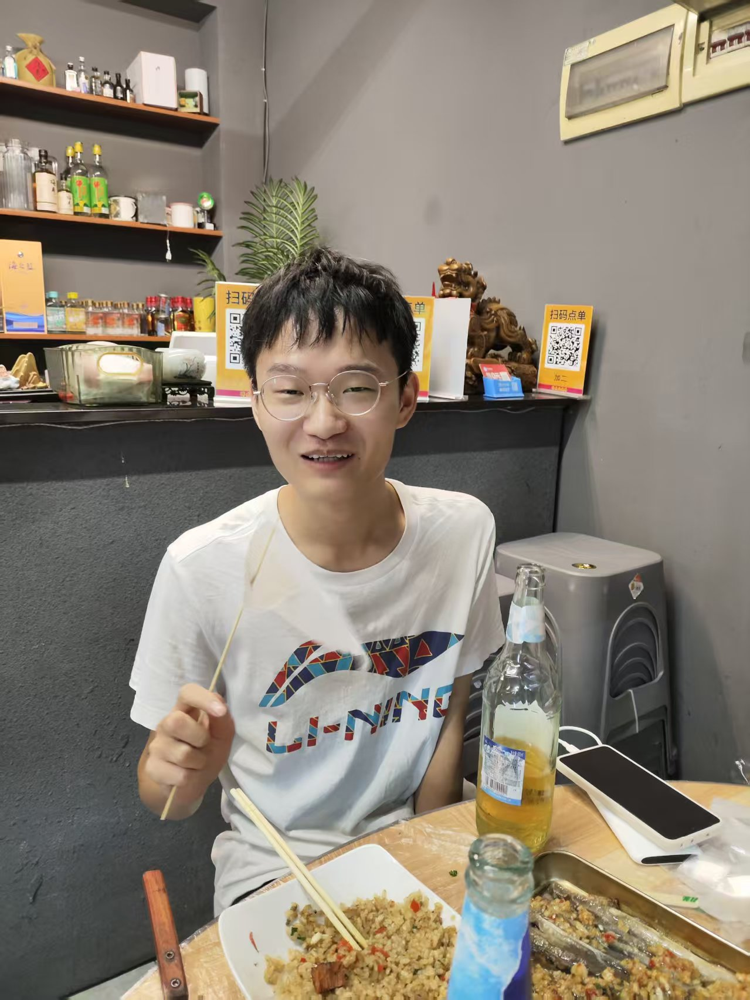

📱↻
获得最佳体验
请在
浏览器
中打开此页面
并
横屏显示
以获得最佳观看效果
页面将在您点击后播放背景音乐
继续浏览
复制链接
您的浏览器不支持音频播放。
致最好的Duck：
当年少年许下的狂言，如今正一笔一划写进岁月。
一同驰骋峡谷、熬过长夜、扛过风雨，也为彼此喝彩。
不饰锋芒，不掩真心，喜怒哀乐皆是当面出剑。
有人敬你一杯酒，我便愿送你一程山水——此后天涯，同走江湖。
愿你：胸怀星火，眼底长明，脚下坦途，肩上有风。
得意时，我是与你同饮的酒客；失意时，我是替你挡刀的故人。
今夜不说煽情，只留一句：
今夜暂许你梦里
-- 来自老朋友Bear
记忆播放
×

第一张：兄弟情起点——一起的傻笑是证据
上一张
暂停
下一张
悬浮
▲
🌗
🖼
🎵
🎆 双击放烟花